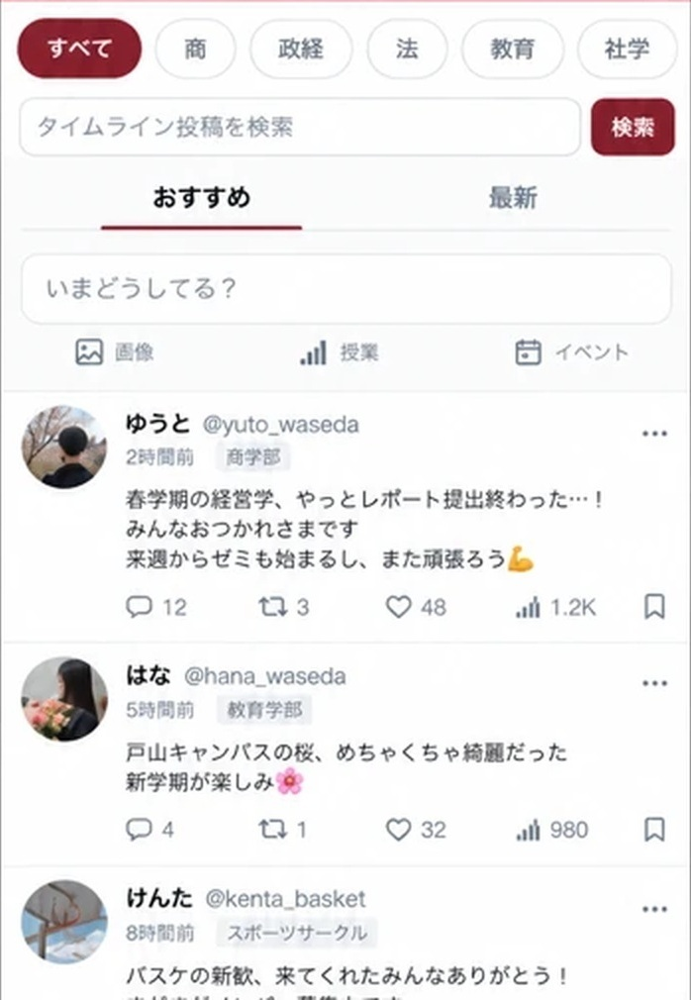
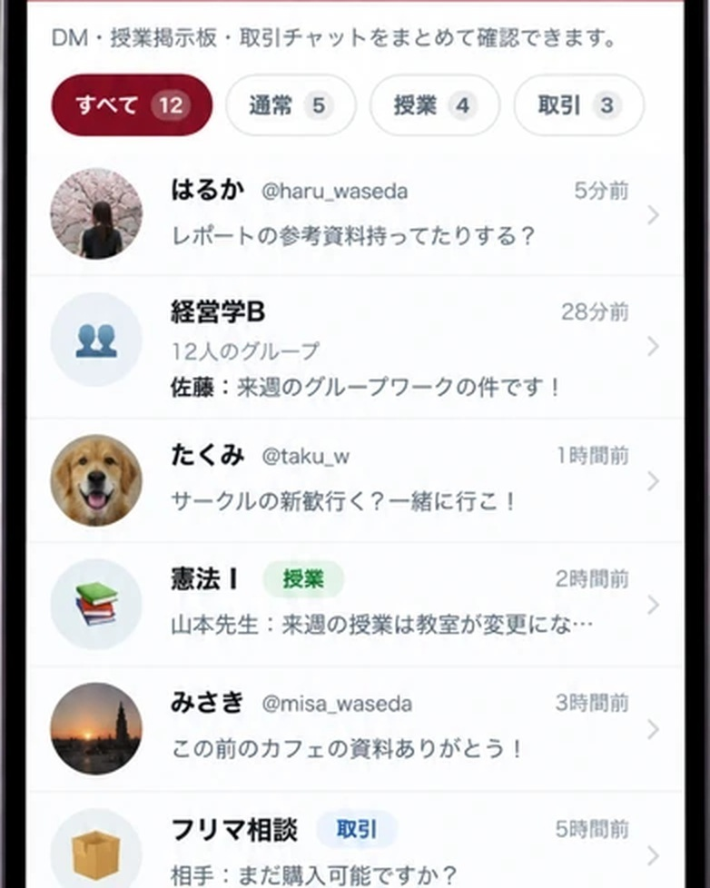
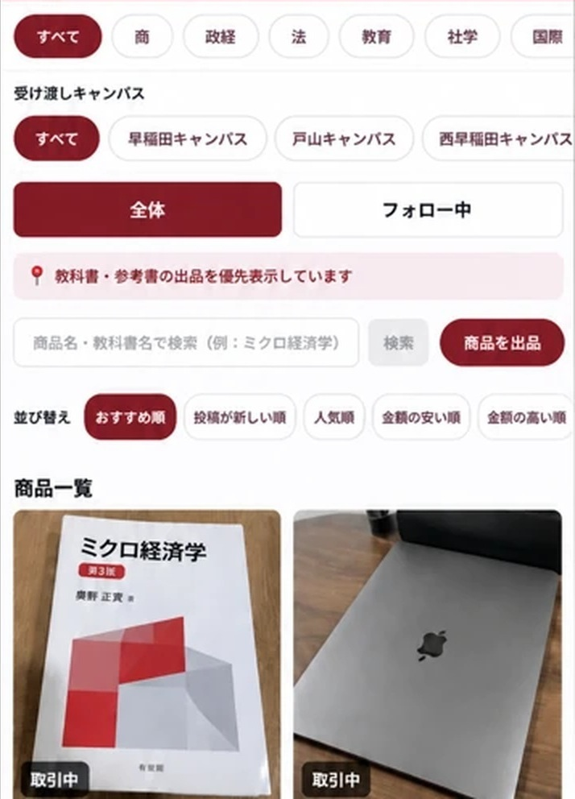
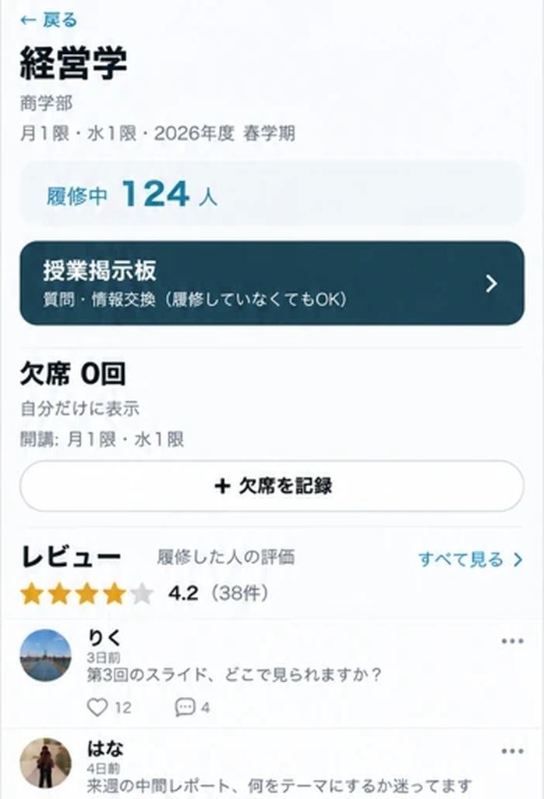
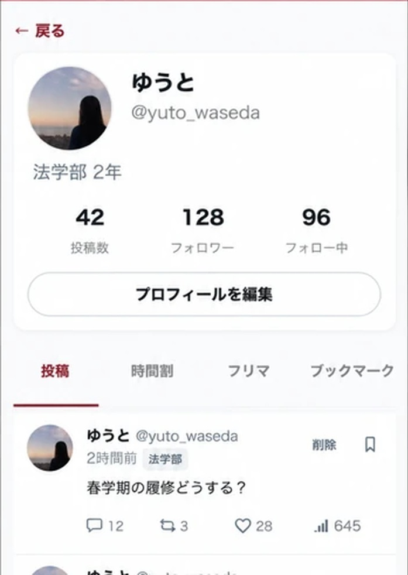
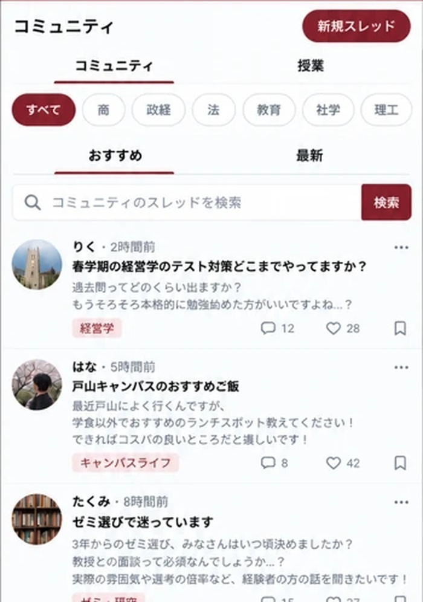

部分拡大
タイムライン
promo-timeline.webp → ui/timeline.jpg

部分拡大
メッセージ
promo-messages.webp → ui/messages.jpg

部分拡大
フリマ
promo-fleamarket.webp → ui/fleamarket.jpg

部分拡大
授業詳細・レビュー
promo-course.webp → ui/course.jpg

部分拡大
プロフィール
promo-profile.webp → ui/profile.jpg

部分拡大
コミュニティ（中間切り）
promo-community.webp → ui/community.jpg（フル端末があるためLPでは未使用）
